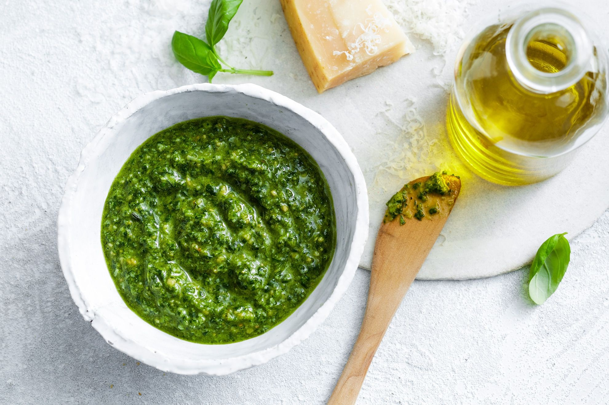

- Prep Time: 10 mins
- Total Time: 10 mins
- Yields: 8 servings (1.5 cups total)

Ingredients
- 2 cups fresh (sweet) basil leaves, tightly packed
- 3/4 cup shredded Parmesan cheese
- 1/2 cup extra virgin olive oil
- 1/2 cup pine nuts
- 2 garlic cloves, (large)
- 1/4 cup lemon juice, (juice of 2 small lemons)
- 1/2 tsp salt, or to taste
- 1/4 tsp black pepper
Instructions
- Wash and dry the basil leaves--you can use a salad spinner to make this step easier.
- Place basil, Parmesan cheese, nuts, garlic cloves, lemon juice, olive oil, salt, and pepper into a food processor. Blend until smooth.
- Salt to taste.